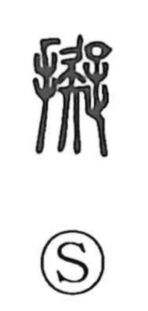

擬

Uncategorized
Kun: hakaru, nazoraeru | On: gi
to imitate ・ to liken ・ to compare ・ provisional
Explanation
A phono-semantic character with 疑 as the phonetic element marking the on reading gi. 疑 depicts a figure who has halted with cane raised, turning back, unable to decide whether to advance or retreat. From this image of hesitation—the thinking and hakaru, the planning that precedes action—the character acquires the senses of what is provisional or tentative, of likening one thing to another (nazoraeru), and by extension imitation.